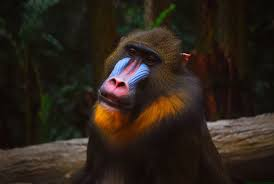

Mandriles
 En África, se pueden observar mandriles en el Congo, en el Parque Nacional Odzala-Kokoua, uno de los parques nacionales más antiguos de África.
Amenazas
Se estima que el 85% de las especies de monos son cazadas en Indonesia, el 64% en Madagascar, el 51% en la República Democrática del Congo y el 35% en Brasil.